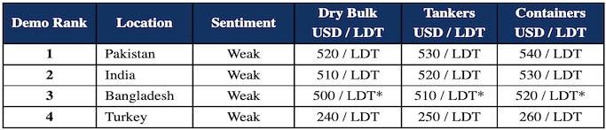

inWeekly Demolition Reports03/01/2023

As we close out another year, sub-continent markets remain suspended at their weakest point for some time now. Pricing remains firm (given the historical price average has been around USD 350/LDT or so), but sentiments and conditions on the ground across all locations remain somewhat precarious.
While Bangladesh has been the main proponent of such concern – given the ongoing financial crisis that has resulted in the Bangladeshi government restricting the sanctioning of new Letters of Credit (L/Cs) for even the smallest purchases of USD 1 million and below – this week, the Pakistani government threw its hat in the ring as well, restricting a bevy of L/Cs being sanctioned on recent local purchases.
Only very few Bangladeshi buyers with private financing and Usance L/Cs are able to acquire new units, but even so, many end users seem content to take a break and watch market developments before committing afresh, with prices so uncertain.
The picture in India remains slightly rosier, even though levels have cooled off some USD 200/LDT since the peaks of over USD 700/LDT seen earlier this year. On the far end, Turkey spent another slow week devoid of tonnage, but reported marginal improvements in import and local steel – without much fanfare.
Overall, it seems many end buyers are likely still cautious, given the sustained ferocity of the falls, and having filled their plots with more expensive units at the start of the year, are now troubled as to when to buy anew to even out those losses.
Port reports have been a testament to the fact that there have been very few arrivals over the last 6 months and only now that tonnage flow is starting to increase are we seeing some movement in those markets that are able to import new vessels at some increasingly bullish numbers.
For week 52 of 2022, GMS demo rankings / pricing for the week are as below.

📄 Download PDF: Ship-recycling-market-insight-week-52-2022-Happy-New-Cheer.pdfSource: GMS,Inc. ,https://www.gmsinc.net/gms_new/index.php/web